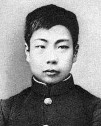
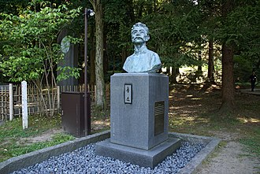
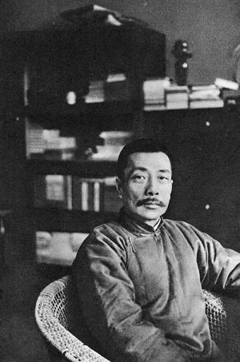
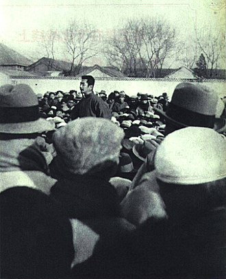
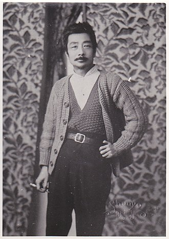

鲁迅照片






| 体裁 | 代表作 |
|---|---|
| 小说 | 《狂人日记》《呐喊》《彷徨》 |
| 杂文 | 《二心集》《华盖集》 |
| 散文 | 《朝花夕拾》《野草》 |
| 诗歌 | 《自题小像》《四一二事变》《徬徨·题辞》《题三义塔》 |
毛泽东：“我们纪念他，不仅因为他的文章写得好，是一个伟大的文学家，而且因为他是一个民族解放的急先锋，给革命以很大的助力。他并不是共产党组织中的一人，然而他的思想、行动、著作，都是马克思主义的。他是党外的布尔什维克。……鲁迅先生的第一个特点，是他的政治的远见。……鲁迅在中国的价值，据我看要算是中国的第一等圣人。孔夫子是封建社会的圣人，鲁迅则是现代中国的圣人。……鲁迅的第二个特点，就是他的斗争精神。……鲁迅的第三个特点是他的牺牲精神。……综合上述这几个特点，形成了一种伟大的‘鲁迅精神’。”“鲁迅，就是这个文化新军的最伟大和最英勇的旗手。鲁迅是中国文化革命的主将，他不但是伟大的文学家，而且是伟大的思想家和伟大的革命家。鲁迅的骨头是最硬的，他没有丝毫的奴颜和媚骨，这是殖民地半殖民地人民最可宝贵的性格。鲁迅是在文化战线上，代表全民族的大多数，向着敌人冲锋陷阵的最正确、最勇敢、最坚决、最忠实、最热忱的空前的民族英雄。鲁迅的方向，就是中华民族新文化的方向。”
陈独秀：“世之毁誉过当者，莫如对于鲁迅先生。鲁迅先生和他的弟弟启明先生，都是《新青年》作者之一人，虽然不是最主要的作者，发表的文字也很不少，尤其是启明先生；然而他们两位，都有他们自己独立的思想，不是因为附和《新青年》作者中那一个人而参加的，所以他们的作品在《新青年》中特别有价值，这是我个人的私见。鲁迅先生的短篇幽默文章，在中国有空前的天才，思想也是前进的。在民国十六七年，他还没有接近政党以前，党中一班无知妄人，把他骂得一文不值，那时我曾为他大抱不平。后来他接近了政党，同是那一班无知妄人，忽然把他抬到三十三层天以上，仿佛鲁迅先生从前是个狗，后来是个神。我却以为真实的鲁迅并不是神，也不是狗，而是个人，有文学天才的人。”
蔡元培：“鲁迅先生的创作，除《坟》、《呐喊》、《野草》数种外，均成于一九二五年至一九三六年中，其文除小说、书信一种外，均为杂文与短评，以十二年光阴成此许多作品，他的感想之丰富，观察之深刻，意境之隽永，字句之正确，他人所苦思力索而不易得当的，他就很自然的写出来，这是何等天才!何等学力!”
胡适：“我以为不必攻击其私人行为。鲁迅狺狺攻击我们，其实何损于我们一丝一毫？……鲁迅自有他的长处。如他的早年文学作品，如他的小说史研究，皆是上等工作。”
胡适在1956年曾对周策纵说：“鲁迅是个自由主义者，绝不会为外力所屈服，鲁迅是我们的人。”
郁达夫：“如问中国自有新文学运动以来，谁最伟大？谁最能代表这个时代？我将毫不踌躇地回答：是鲁迅。鲁迅的小说，比之中国几千年来所有这方面的杰作，更高一步。至于他的随笔杂感，更提供了前不见古人，而后人又绝不能追随的风格，首先其特色为观察之深刻，谈锋之犀利，文笔之简洁，比喻之巧妙，又因其飘溢几分幽默的气氛，就难怪读者会感到一种即使喝毒酒也不怕死似的凄厉的风味。当我们热衷去掌握现实时，他已把握了古今与未来。要全面了解中国的民族精神，除了读《鲁迅全集》以外，别无捷径。”
日本著名作家，诺贝尔文学奖获得者大江健三郎：“二十世纪亚洲最伟大作家。”
韩国文学评论家金良守：“二十世纪东亚文化地图上占最大领土的作家”。
德国著名汉学家顾彬：“鲁迅是（中国）20世纪无人可及也无法逾越的作家。”